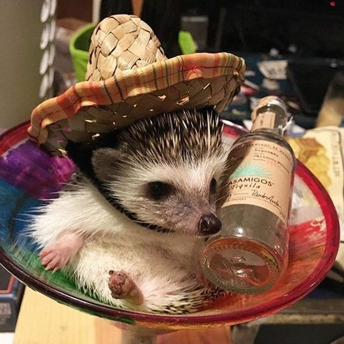

Hedgehog country
El sitio principal donde encontrar toda la informacion que necesites sobre erizos. Disfruta la informacion del sitio!
Erizos!

Un erizo es un mamífero que mide aproximadamente 15 centímetros y puede llegar a pesar hasta 400 gramos. Se caracteriza por estar cubierto de púas en su lomo y pelo en su pecho y panza, hay gente que dice que parecen papas con espinas, y de hecho, ese tipo tan particular de pelaje lo protege de los depredadores, ya que son solitarios y territoriales. Su promedio de vida, es de aproximadamente ocho años. En esta pagina se detallan más características del erizo, como cuidarlos y más información de utilidad.
Intente referirse a una de nuestras otras paginas para conseguir mas informacion.